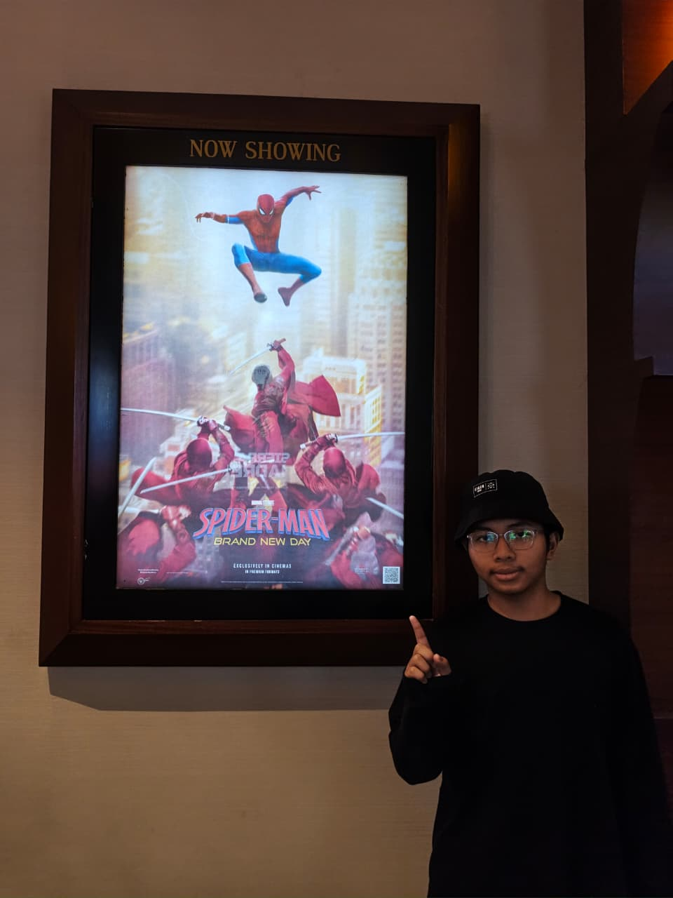
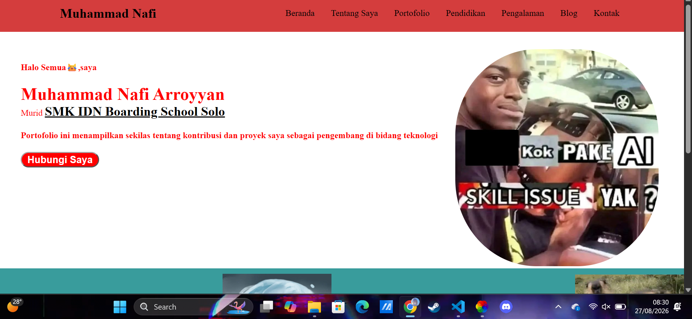
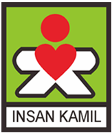
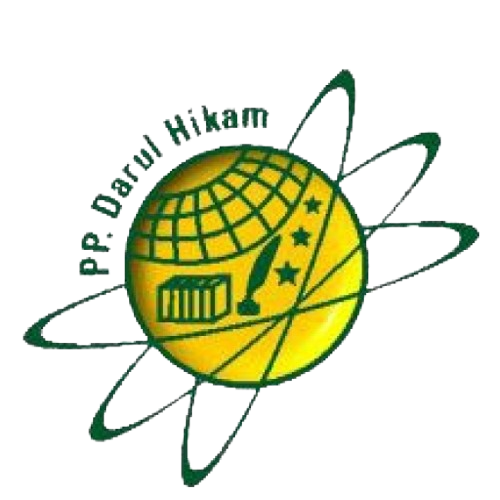
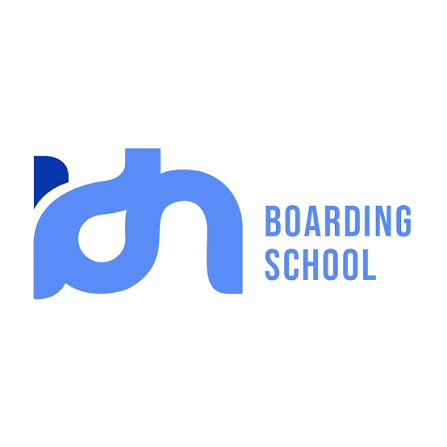

Halo Semua😹,saya
Muhammad Nafi Arroyyan
About Me
Hi,saya Nafi' murid kelas 10 SMK di IDN Solo jurusan RPL kelas RPL-A,saya berumur 16 tahun dan asal saya dari Sidoarjo. Saya sekolah SD di Sidoarjo SDIT Insan Kamil Sidoarjo dan MTS di Mojokerto MTS Unggulan Darul Hikam
Project saya Portofolio , salah satu kegiatan di IDN Boarding School

Yang ini adalah codingan nya Portofolio

Riwayat Pendidikan
Sekolah SD

Sekolah MTS

Sekolah SMK
